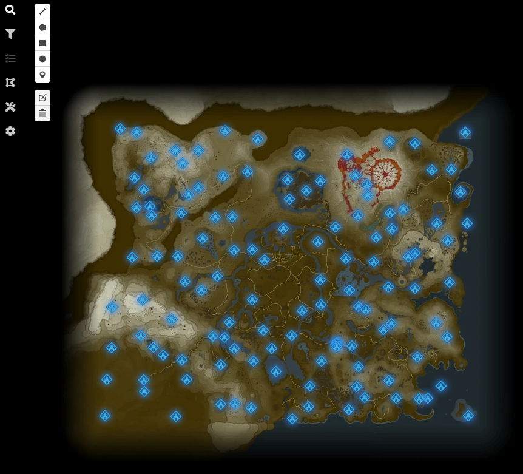
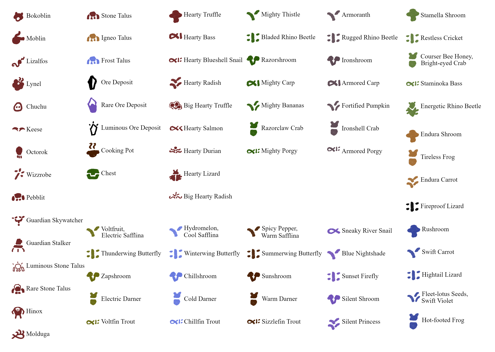
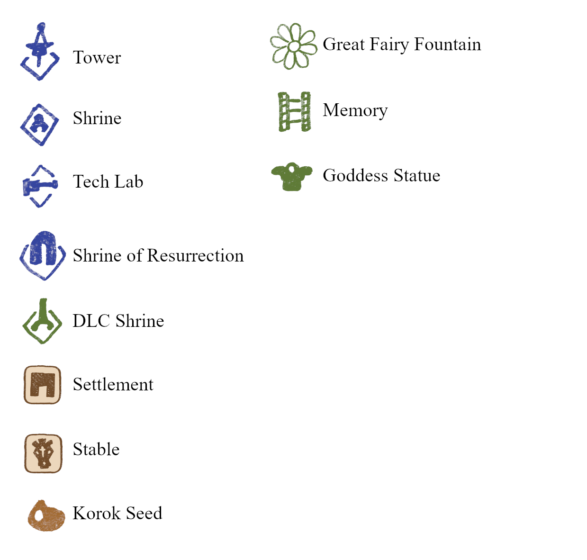
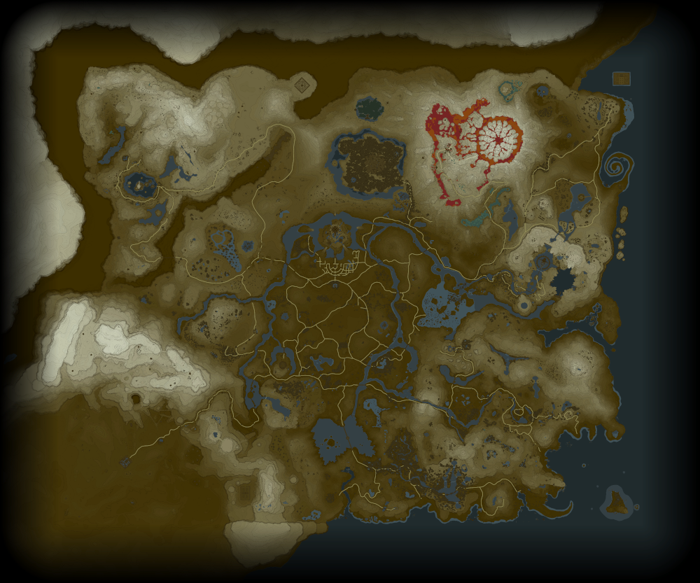
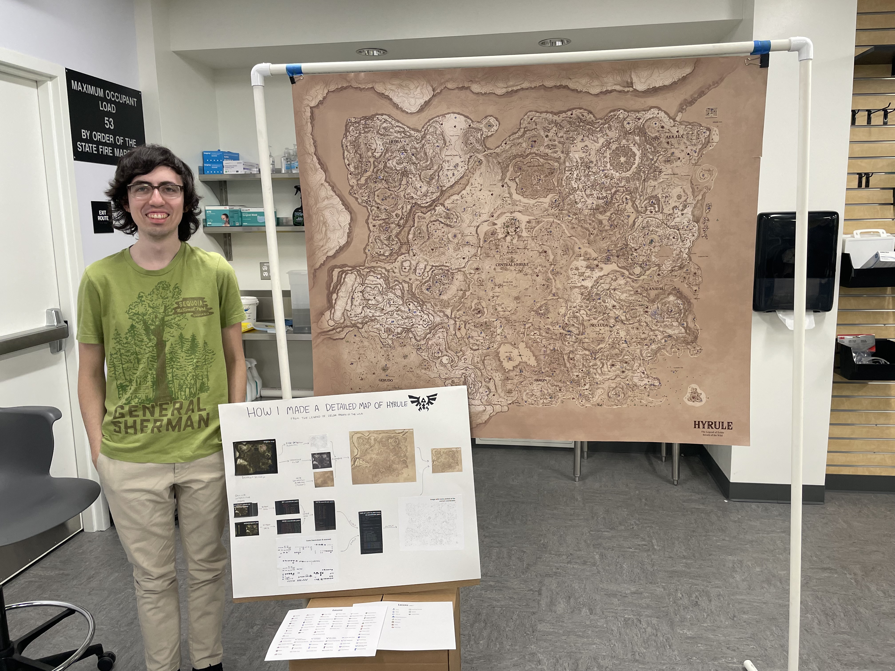

August 2023
To my knowledge, this is the most detailed non-interactive map of Hyrule from The Legend of Zelda: Breath of the Wild. I didn't draw it by hand: instead, I created it with code.
You can find excellent interactive maps of Breath of the Wild in a few different places online. These digital interactive maps have a lot more details than mine has overall, but they don't display every detail at once like my static map does.
The most popular interactive map is from Zeldamods.org:
 Visit zeldamods.org mapThere's also this interactive map I found hosted on Github:
 Visit map on Github
Visit map on Github
These interactive maps use data from a decompilation of the game, which means that the maps use coordinate data that comes straight from the game's code. The game's code had to be reverse-engineered by a large online community to get the coordinates: this reverse-engineering process is called decompiling, and it's really interesting.
To make my map, I took the coordinate data from the two interactive maps above and wrote some code to plot everything I wanted on one image.
My map plots everything from towers and shrines to koroks, ore deposits, crickets, keese, and hearty truffles. It plots every food item in the game that gives an effect (such as increased speed or attack damage).
 To plot all of these things on one map, the icons had to be very small, which means the map needed to have a very high resolution (25,000 by 20,000 pixels) to achieve the level of quality I wanted. The full-resolution image is much too big to display on a webpage, so the map you see above is a scaled-down copy.
I hand-drew all of the icons for the map, but I did not hand-draw the terrain itself. Instead, I used the actual map that's in the game (which I also took from the online decompilation project) and I used a bunch of filters to make it look like it's hand-drawn on an old piece of paper.
This is what the map inside the actual game looks like, without the filters:
When the map was complete, I got a large four-foot-wide print of it to hang on my wall. I had the opportunity to display the map at Sac State's Create Make and Share Fair in November 2023.
In the future, I'd be interested in selling prints of the map if possible. If I did, I'd redo the whole map for a few reasons. I'd like to redesign the icons, add new details like the dragons' flight paths, make the text more readable, and possibly hand-trace the terrain on a real sheet of paper, too.
I would also make a map for the newer Zelda game, Tears of the Kingdom, which has a similar decompilation project.
I also want to publish resources to make it easier for other developers to create their own Breath of the Wild maps. For example, even though I was able to use pre-existing coordinate data, I still had to modify the coordinates to be plotted correctly on my map, which was not as straightforward as you might think: the two sources I drew from use different coordinate systems.
Be warned: the full-resolution version of my map is 1 GB large, so it may take a while to download, and you may experience problems trying to view the image without specific software like an image editor. I was successfully able to view and edit the image in GIMP.
Please credit me if you share the map anywhere.
Download the full-resolution map